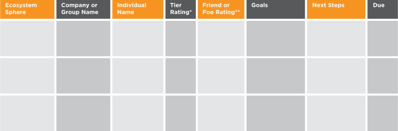
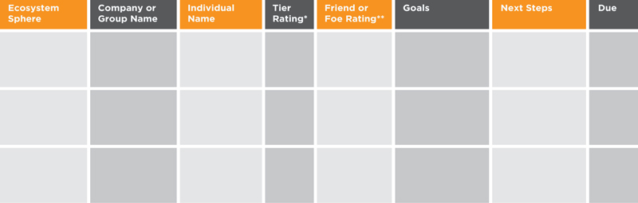
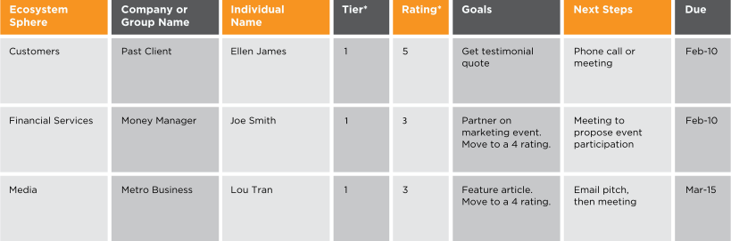
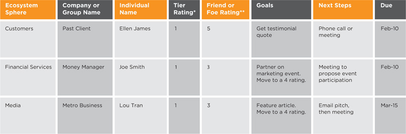

Awareness of your brand ecosystem will help you to be more effective and use your time more wisely as you build your personal brand. For some, completing their ecosystem model is enough. For others, using more detailed and systematic management tools is preferred. If you work better with greater granularity, you can put your ecosystem influencers into a spreadsheet or a customer relationship management (CRM) tool, or use the templates that are shared in this section.
If an influencer relationship is important to you, it deserves to be nurtured and managed over time. Ecosystem relationship management helps to establish priorities, goals, actions and measurement for important relationships. This optional management tool (Figure 5.9) is especially helpful when mapping out how to launch a new initiative or idea.
Figure 5.9
Ecosystem Relationship Management
 
* Tier ratings are for understanding how important each influencer is. For instance, Tier Ones might always get your important news from you in person or with a personal call, and Tier Twos might get a personalized email.
** Friend or Foe Ratings should be on a scale of 1 to 5, with 1 being hostile to you and with 5 being an enthusiastic advocate. The goal will be to improve these ratings over time.
Figure 5.10
Sample
Ecosystem Relationship Management
 